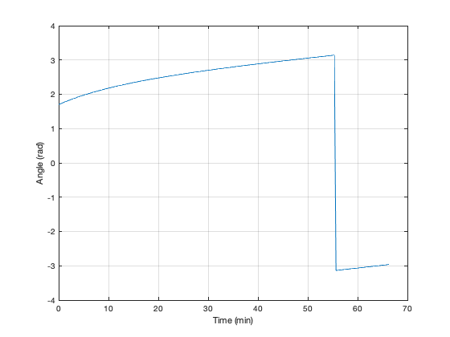
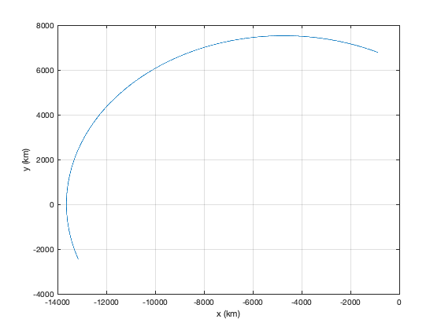

Generate Orbits for angles-only element estimation
Saves a mat-file called OrbitData used by other demos.
Contents
See also
El2RV, RungeKutta, RHSOrbit, TimeLabel, PlotSet
nEl = 500; % Number of sets of data d = struct; % Initialize d.mu = 3.98600436e5; % Gravitational parameter, km^3/s^2 d.a = [0;0]; % Perturbing acceleration % Random elements e = 0.6*rand(1,nEl); % Eccentricity a = 8000 + 1000*randn(1,nEl); % Semi-major axis M = 0.25*pi*rand(1,nEl); % Mean anomaly % Set up the simulation nSim = 2000; % Number of simulation steps dT = 2; % Time step % Only use some of the sim steps jUse = 1:10:nSim; % Data for Deep Learning data = cell(nEl,1);
Simulate each of the orbits
x = zeros(4,nSim); t = (0:(nSim-1))*dT; clear el; el(nEl) = struct('a',7000,'e',0); % initialize struct array for k = 1:nEl [r,v] = El2RV([a(k) 0 0 0 e(k) M(k)]); x = [r(1:2);v(1:2)]; xP = zeros(4,nSim); for j = 1:nSim xP(:,j) = x; x = RungeKutta( @RHSOrbit, 0, x, dT, d ); end data{k} = atan2(xP(2,jUse),xP(1,jUse)); el(k).a = a(k); el(k).e = e(k); end
Save for the Deep Learning algorithm
save('OrbitData','data','el');
Plot
[t, tL] = TimeLabel(t(jUse));
angle = data{k}(1,:);
PlotSet(t,angle,'x label', tL,'y label','Angle (rad)','figure title','Angle');
PlotSet(xP(1,:),xP(2,:),'x label', 'x (km)','y label','y (km)','figure title','Orbit');
  Copyright
Copyright (c) 2019, 2022 Princeton Satellite Systems, Inc. All rights reserved.